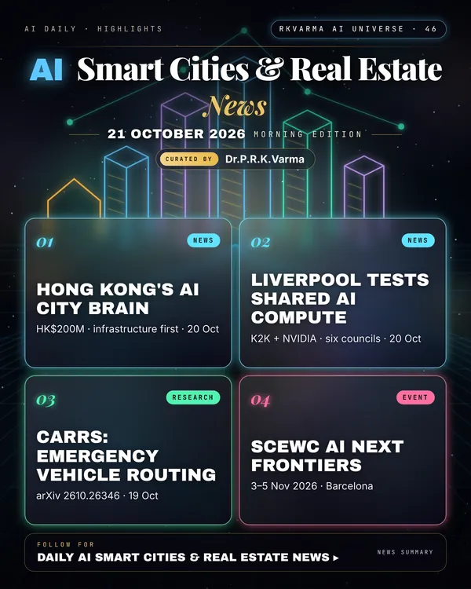

Latest updates · 21 October 2026
In the full issue →Cities are building shared AI brains: Hong Kong's HK$200 million 'AI city brain' will start with infrastructure monitoring, and the Liverpool City Region is exploring shared AI computing with K2K and NVIDIA.
Research, industry & policy
- Hong Kong's 'AI city brain' to focus first on infrastructure monitoring, South China Morning Post · 20 Oct 2026: Officials told the Legislative Council the HK$200 million project will integrate infrastructure databases before exploring public services later.
- Liverpool explores shared AI computing for public services, Cities Today · 20 Oct 2026: The region's six local authorities, researchers and businesses could share secure AI computing; an initial phase is expected to begin in late October.
- i-City launches AI Living @ i-City, The Star · 20 Oct 2026: In Shah Alam, i-City launched AI Living @ i-City, bringing together intelligent home technology, robotics and wellness, with i-Ris, a 500-unit residential tower designed for intelligent systems and domestic robotics.
Journals & preprints
- CARRS: A Constraint-Aware, Real-Time Routing System for Emergency Vehicles in Urban Environments, arXiv 2610.26346 · 19 Oct 2026: Emergency vehicles such as police vehicles, fire engines, and ambulances require a stable and efficient route optimization to reach life-critical events in the shortest times possible.
- WUI-CAST: Real-Time Forecast Updating for Partially Observed Wildland-Urban Interface Fires, arXiv 2610.24553 · 17 Oct 2026: Wildland-urban interface (WUI) fires couple landscape spread, structural fire development, and wind-driven ember transport.
Conferences, workshops & events
- AI Next Frontiers at SCEWC 2026, 3–5 Nov 2026 · Barcelona: Smart City Expo World Congress AI track.
Why it matters
Shared city data and compute can cut duplication, but residents need clear rules on how the data are used.

